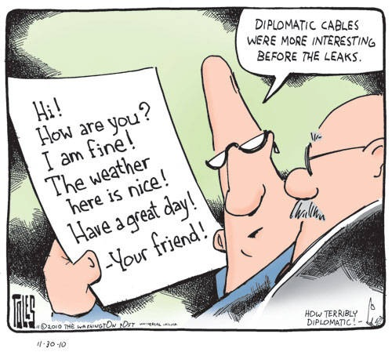

信号的传输总要符合一定的协议（protocol）。比如说长城上放狼烟，是因为人们已经预先设定好狼烟这个物理信号代表了“敌人入侵”这一抽象信号。这样一个“狼烟=敌人入侵”就是一个简单的协议。协议可以更复杂，比如摩尔斯码（Morse Code），使用短信号和长信号的组合，来代表不同的英文字母。比如SOS（***—***, *代表短信号，-代表长信号）。这样“***= S, —=O”就是摩尔斯码规定的协议。然而更进一层，人们会知道SOS是求助信息，原因是我们有“SOS=求救”这个协议存在在脑海里。所以”***—***=SOS=求救”是一个由两个协议组成的分层通信系统。
计算机之间的通信也要遵循不同层次的协议，来实现计算机的通信。
物理层（physical layer）
所谓的物理层，是指光纤、电缆或者电磁波等真实存在的物理媒介。这些媒介可以传送物理信号，比如亮度、电压或者振幅。对于数字应用来说，我们只需要两种物理信号来分别表示0和1，比如用高电压表示1，低电压表示0，就构成了简单的物理层协议。针对某种媒介，电脑可以有相应的接口，用来接收物理信号，并解读成为0/1序列。
链路层（link layer）
在链路层，信息以帧（frame）为单位传输。所谓的帧，是一段有限的0/1序列。链路层协议的功能就是识别0/1序列中所包含的帧。比如说，根据一定的0/1组合识别出帧的起始和结束。在帧中，有收信地址（Source, SRC）和送信地址（Destination, DST），还有能够探测错误的校验序列（Frame Check Sequence）。当然，帧中最重要的最重要是所要传输的数据 （payload）。这些数据往往符合更高层协议，供网络的上层使用。与数据相配套，帧中也有数据的类型（Type）信息。链路层协议不关心数据中到底包含什么。帧就像是一个信封，把数据包裹起来。
以太网（Ethernet）和WiFi是现在最常见的链路层协议。通过链路层协议，我们可以建立局域的以太网或者WiFi局域网，并让位于同一局域网络中的两台计算机通信。链路层就像是一个社区的邮差，他认识社区中的每一户人。社区中的每个人都可以将一封信（帧）交给他，让他送给同一社区的另一户人家。
网络层（network layer）
不同的社区之间该如何通信呢？ 换句话说，如何让WiFi上的一台计算机和以太网上的另一台计算机通信呢？我们需要一个“中间人”。这个“中间人”必须有以下功能: 1. 能从物理层上在两个网络的接收和发送0/1序列，2. 能同时理解两种网络的帧格式。路由器（router）就是为此而产生的“翻译”。一个路由器有多个网卡（NIC，Network Interface Controller），每个NIC可以接入多个网络，并理解相应的连接层协议。在帧经过路由到达另一个网络的时候，路由会读取帧的信息，并改写以发送到另一个网络。所以路由器就像是在两个社区都有分支的邮局。一个社区的邮差将信送到本社区的邮局分支，而邮局会通过自己在另一个地区的分支将信转交给另一个社区的邮差手中，并由另一个社区的邮差最终送到目的地。
整个通信过程如下:WiFi上的计算机1 -> 路由WiFi接口 -> 路由以太网接口 -> 以太网上的计算机2（蓝色表示WiFi网络，绿色表示以太网络）
在链路层，我们的一个帧中只能记录SRC和DST两个地址。而上面的过程需要经过四个地址 （计算机1，WiFi接口，以太网接口，计算机2）。显然，仅仅靠链路层协议无法满足我们的需要。由于链路层协议开发在先，我们无法改动链路层协议，只能在链路层的数据（payload），也就是信纸内部下功夫了。IP协议应运而生。
计算机1，路由器和计算机2都要懂得IP协议。当计算机1写信的时候，会在信纸的开头写上这封信的出发地址和最终到达地址 （而不是在信封上），而在信封上写上要送往邮局。WiFi网的邮差将信送往邮局。在邮局，信被打开，邮局工作人员看到最终地址，于是将信包装在一个新的信封中，写上出发地为邮局，到达地为计算机2，并交给以太网的邮差，由以太网的邮差送往计算机2。
（IP协议还要求写如诸如校验等信息，交通状况等信息，以保护通信的稳定性。）
在链路层，邮差只负责在本社区送信，所以信封上的地址总是“第一条街第三座房子”或者说“中心十字路口拐角的小房子”这样一些本地人才了解的地址描述，这给邮局的工作带来不便。所以邮局要求，信纸上写的地址必须是一个符合官方规定的“邮编”，也就是IP地址。这个地址为世界上的每一个房子编号（邮编）。当信件送到邮局的时候，邮局根据邮编，就能查到对应的地址描述，从而能顺利改写信封上的信息。
每个邮局一般连接多个社区，而一个社区也可以有多个邮局，分别通往不同的社区。有时候一封信要通过多个邮局转交，才能最终到达目的地，这个过程叫做route。邮局将分离的局域网络连接成了internet，并最终构成了覆盖全球的互联网。
传输层（transport layer）
上面的三层协议让不同的计算机之间可以通信。但计算机中实际上有许多个进程，每个进程都可能有通信的需求。这就好像一所房子里住了好几个人（进程），如何让信精确的送到某个人手里呢？遵照之前相同的逻辑，我们需要在信纸上写上新的信息，比如收信人的姓名，才可能让信送到。所以，传输层就是在信纸的空白上写上新的“收信人”信息。每一所房子会配备一个管理员（传输层协议）。管理员从邮差手中接过信，会根据“收信人”，将信送给房子中的某个人。
传输层协议，比如TCP和UDP，使用端口号（port number）来识别收信人（某个进程）。在写信的时候，我们写上目的地的端口。当信到达目的地的管理员手中，他会根据传输层协议，识别端口号，将信送给不同的人。
TCP和UDP协议是两种不同的传输层协议。UDP协议类似于我们的信件交流过程。TCP协议则好像两个情人间的频繁通信。一个小情人要表达的感情太多，以致于连续写了好几封信。而另一方必须将这些信按顺序排列起来，才能看明白全部的意思。TCP协议还有控制网络交通等功能。
应用层（application layer）
通过上面的几层协议，我们已经可以在任意两个人（进程）之间进行通信。然而每个人实际上从事的是不同的行业。有的人是律师，有的人外交官。比如说律师之间的通信，会用严格的律师术语，以免产生纠纷。再比如外交官之间的通信，必须符合一定的外交格式，以免发生外交误会。再比如间谍通过暗号来传递加密信息。应用层协议是对信件内容进一步的用语规范。应用层的协议包括用于Web浏览的HTTP协议，用于传输文件的FTP协议，用于Email的IMAP等等。

总结
总过网络分层，我们从原始的0/1序列抽象出
本地地址（邮差）、邮编（邮局）、收信人（管理员）、收信人行业（用语规范）
这些概念。这些概念最终允许互联网上的分布于两台计算机的两个进程相互通信。
写信人必须按照各层的协议，封装好整个信封 （encapsulation）；而收信人则按照相反的顺序，来拆开这个信封。整个过程是 可读信息 -> 二进制 -> 可读信息。计算机只能理解和传输0/1序列，而计算机的用户则总是输入和输出可读信息。网络协议保证了可读信息在整个转换和传输过程中的完整性。
计算机协议本身还有更多的细节需要深入。这篇文章只是从分层的角度描述各个层次所实现的功能。
原文链接：https://www.cnblogs.com/vamei/archive/2012/11/24/2773967.html